Neural Surrogate bedienen
Bedienseite, Stand 06.10.2026. Wie man aus einer Messtabelle ein neuronales Ersatzmodell lernt – Daten zuordnen, Architektur wählen oder suchen lassen, trainieren, auswerten, speichern – und wie die zweite Arbeitsweise ein kleines Sprachmodell aus Text lernt. Die Bilder sind Bildschirmfotos der App mit einem vereinfachten, frei erfundenen Verdichterkennfeld und erfundenen Sätzen.
Das Fenster
Die App öffnet man im Menü Anwendungen mit Neues neuronales Ersatzmodell oder mit Alt+U; eine Modelldatei .ennet öffnet sie direkt.
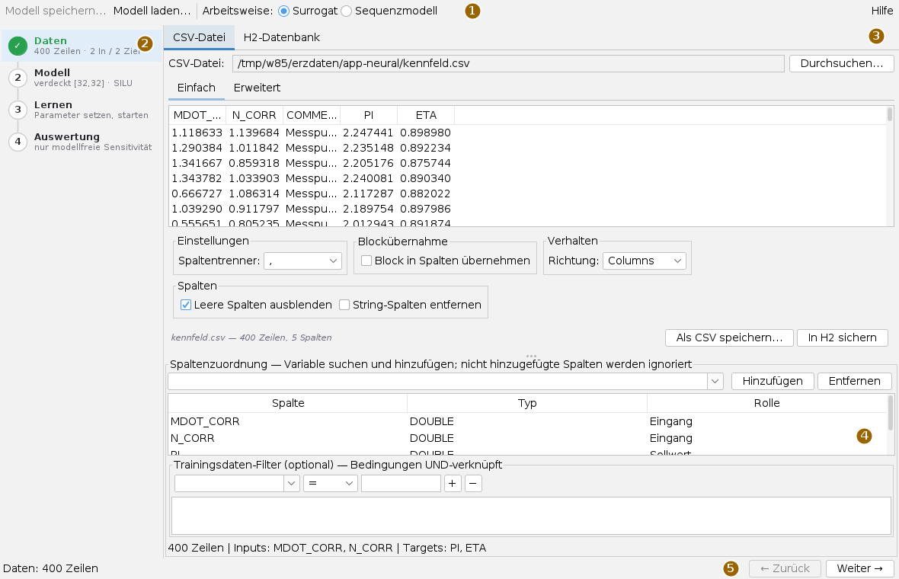
Die Arbeitsweise Surrogat lernt aus einer Tabelle ein Ersatzmodell: aus Eingangsgrößen werden Zielgrößen vorhergesagt, etwa Druckverhältnis und Wirkungsgrad aus Massenstrom und Drehzahl. Die Arbeitsweise Sequenzmodell lernt aus Text ein kleines Sprachmodell; sie hat eigene Schritte (unten). Die Knöpfe Modell speichern… und Modell laden… gehören zum Surrogat und verschwinden im Sequenzmodus.
Links stehen die vier Schritte Daten, Modell, Lernen und Auswertung, jeder mit einer Zeile Stand darunter; ein erledigter Schritt trägt ein grünes Häkchen. Ein Klick auf einen Schritt springt hin, ebenso Weiter → und ← Zurück. Hilfe rechts oben zeigt die eingebaute Hilfe an Stelle der Schritte; Schließen führt zurück.
Ein Ersatzmodell in vier Schritten
- Daten: CSV-Datei laden und Spalten als Eingang und Sollwert hinzufügen.
- Modell: verdeckte Schichten festlegen oder mit Automatische Suche die beste Architektur suchen und übernehmen.
- Lernen: Training starten und die Verlustkurve beobachten.
- Auswertung: Gütemaße, Vorhersage gegen Messung, Schnitte und Kontur prüfen; dann Modell speichern…
Schritt 1: Daten
Oben wählt man die Quelle: CSV-Datei mit Durchsuchen…, oder H2-Datenbank für eine Tabelle, die schon in einer H2-Datei liegt. Das Ladefeld zeigt eine Vorschau; das Trennzeichen stellt man unter Einstellungen ein, Vorgabe ist das Komma.
Unter Spaltenzuordnung eine Spalte im Auswahlfeld suchen und Hinzufügen; in der Tabelle die Rolle wählen. Was nicht hinzugefügt ist, wird nicht benutzt; Entfernen nimmt eine Spalte wieder heraus.
| Rolle | Bedeutung |
|---|---|
| Eingang | Eine Größe, aus der vorhergesagt wird. |
| Sollwert | Eine Größe, die vorhergesagt wird (Regression). Mehrere sind erlaubt. |
| Label (Klassifikation) | Eine Klassenspalte, etwa „stabil“, „surge“, „choke“. Genau eine, und nicht zusammen mit Sollwerten. |
Ob das Modell eine Regression oder eine Klassifikation wird, folgt aus den Rollen; die Zeile unter der Tabelle nennt Zeilenzahl, Eingänge und Ziele oder meldet eine ungültige Mischung. Leere oder nicht lesbare Zellen in einer benutzten Spalte brechen die Datenübernahme mit Spaltenname und Zeile ab, statt still mit null zu rechnen. Ein Dezimalkomma wird angenommen.
Der Trainingsdaten-Filter ist freiwillig: Spalte, Vergleich (=, !=, >, >=, <, <=) und Wert wählen, + fügt die Bedingung hinzu, − entfernt die markierte. Alle Bedingungen gelten zugleich, und nur Zahlenspalten lassen sich filtern; die Zeile darunter nennt, wie viele Zeilen übrig bleiben. Fehlt eine Filterspalte nach einem Datenwechsel, entfällt ihre Bedingung ohne Meldung.
Schritt 2: Modell
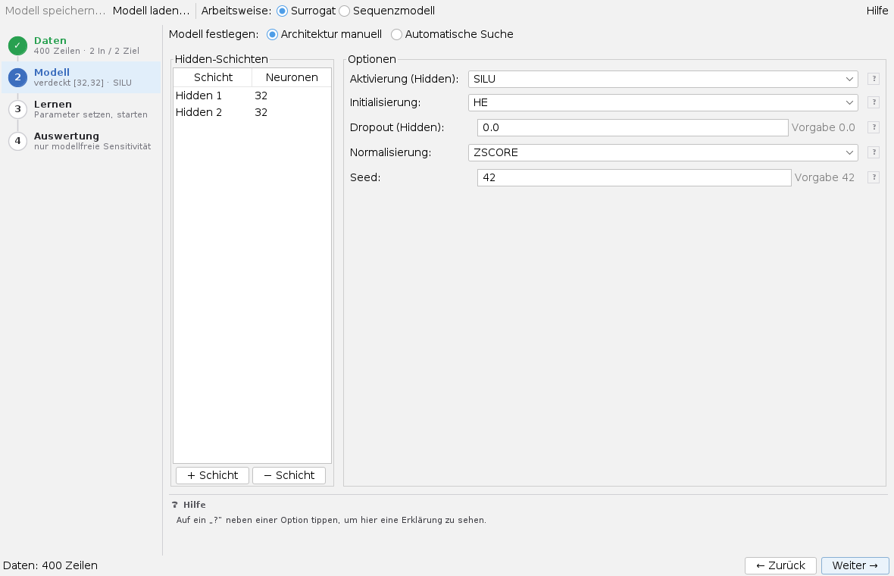
Oben wählt man Architektur manuell oder Automatische Suche. Manuell legt man in Hidden-Schichten die verdeckten Schichten an: + Schicht hängt eine an, − Schicht nimmt die unterste weg, die Neuronenzahl ändert man in der Tabelle. Die Ausgabeschicht hängt die App selbst an. Rechts stehen Aktivierung (SILU, RELU, LEAKY_RELU, TANH), Initialisierung (HE, XAVIER), Dropout, Normalisierung (ZSCORE, MINMAX) und Seed. Hinter jedem Zahlenfeld steht die Vorgabe; ein ? erklärt die Option im Hilfebereich unten.
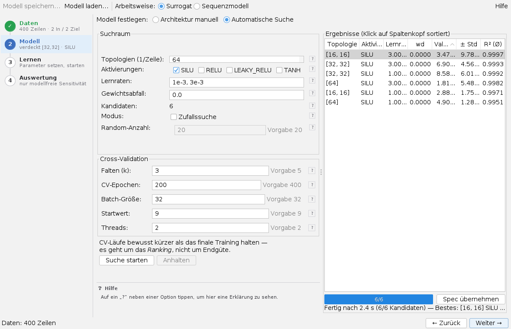
Die automatische Suche probiert Architekturen durch. Unter Suchraum steht je Zeile eine Topologie (32,32 = zwei Schichten zu 32), dazu die Aktivierungen, Lernraten und Werte für den Gewichtsabfall; jede Kombination ist ein Kandidat, die Zahl steht unter Kandidaten. Zufallssuche zieht stattdessen Random-Anzahl Kandidaten mit zufälligen Lernraten. Unter Cross-Validation bestimmen Falten (k), CV-Epochen, Batch-Größe, Startwert und Threads den Lauf.
Suche starten füllt rechts die Tabelle, während die Kandidaten fertig werden; ein Klick auf einen Spaltenkopf sortiert. Anhalten bricht nach der laufenden Epoche ab. Eine Zeile wählen und Spec übernehmen: Architektur und Lernrate gehen in die Schritte Modell und Lernen. Die CV-Läufe dürfen kürzer sein als das endgültige Training – es geht um die Reihenfolge, nicht um die Endgüte.
Schritt 3: Lernen
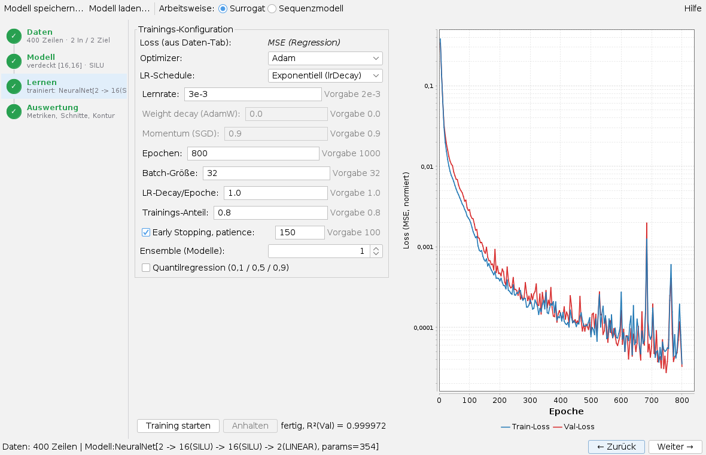
Die Fehlerfunktion folgt aus den Daten: mittlerer quadratischer Fehler bei Sollwerten, Kreuzentropie bei einem Label. Wählbar sind Optimizer (Adam, AdamW, SGD + Momentum, L-BFGS im Vollbatch), LR-Schedule (exponentiell, Cosine, 1-Cycle), Lernrate, Epochen, Batch-Größe, LR-Decay/Epoche und Trainings-Anteil; Weight decay und Momentum sind nur bei AdamW bzw. SGD frei. Early Stopping beendet das Training, wenn sich der Validierungsverlust patience Epochen lang nicht bessert, und braucht einen Trainings-Anteil unter 1.
Ensemble trainiert mehrere Modelle mit verschiedenen Startwerten; ihre Streuung schätzt, wie unsicher die Vorhersage ist – außerhalb der Messpunkte wird sie deutlich größer. Quantilregression trainiert drei Modelle für 10, 50 und 90 % und liefert ein Band, das die Streuung der Daten zeigt, nicht die Unsicherheit des Modells.
Training starten zeichnet die Verlustkurven laufend; Anhalten bricht ab und übernimmt das bisher beste Modell. Danach wechselt die App zur Auswertung. Jedes trainierte oder geladene Modell steht sofort anderen Apps zur Verfügung, etwa app-maps über SUR(latest, …) in Arbeitslinien.
Schritt 4: Auswertung
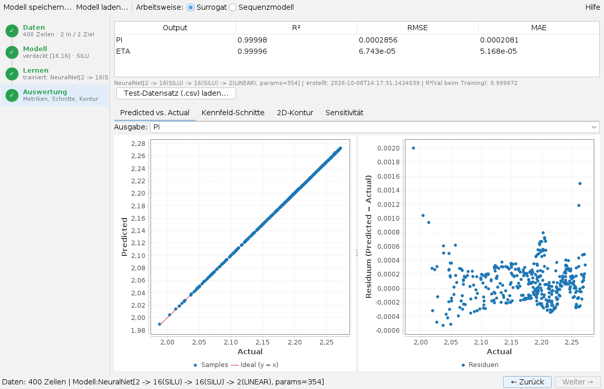
Oben stehen je Ausgabe R², RMSE und MAE in der Rohskala, darunter Bauart, Zeit und R² beim Training. Die Reiter darunter:
- Predicted vs. Actual: Vorhersage gegen Messung mit der Ideallinie, daneben die Residuen; Ausgabe wählt die Größe. Bei einer Klassifikation steht hier die Konfusionsmatrix (Zeile = wahre, Spalte = vorhergesagte Klasse).
- Kennfeld-Schnitte: alle Ausgaben über einem Eingang (X-Achse), die übrigen Eingänge mit Schiebern fest; bei Ensemble oder Quantilen mit Band, bei Klassifikation die Klassenwahrscheinlichkeiten.
- 2D-Kontur: eine Ausgabe als Farbfeld über zwei Eingängen; bei Klassifikation als Regimekarte, deren Farbgrenzen die Klassengrenzen sind.
- Sensitivität: welcher Eingang wie viel der Streuung einer Ausgabe erklärt (siehe unten).
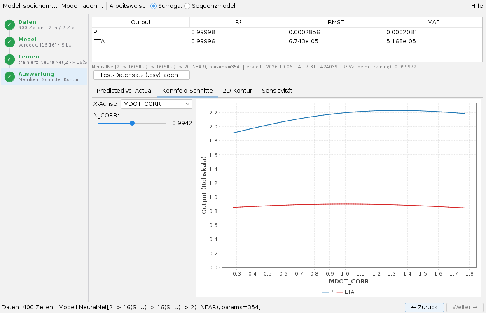
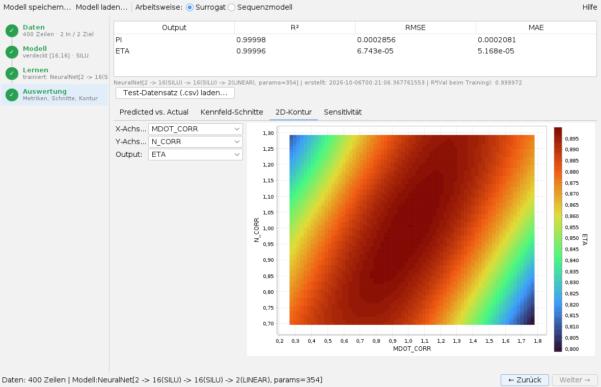
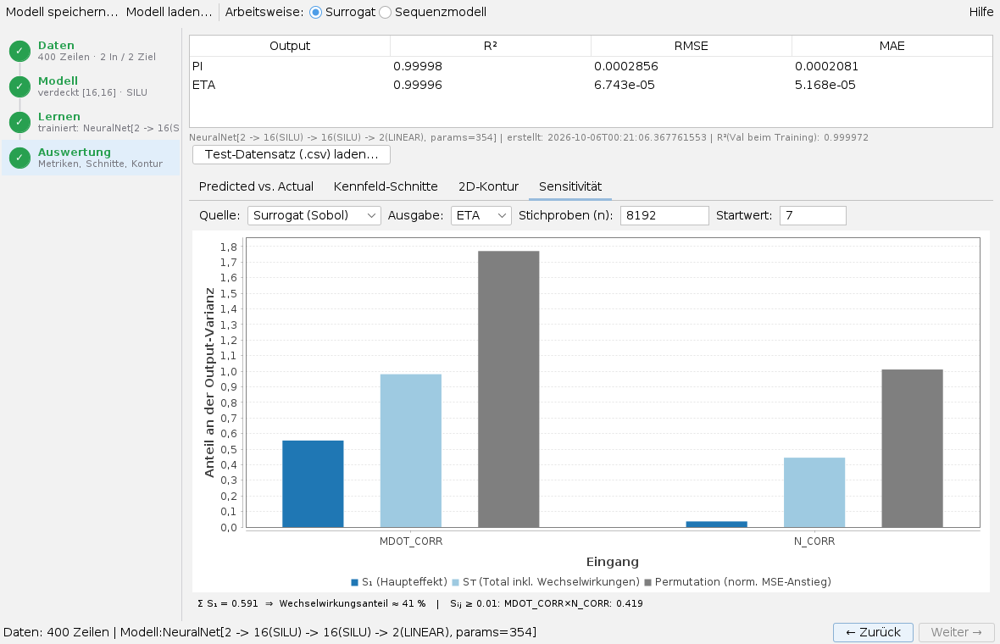
Unter Sensitivität wählt Quelle zwischen Daten (modellfrei) – Haupteffekte direkt aus den Messpunkten, schon vor dem ersten Training – und Surrogat (Sobol): Haupt- und Totaleffekt jedes Eingangs, Wechselwirkungen zweiter Ordnung und die Permutationswichtigkeit, gerechnet mit Stichproben (n) Auswertungen des Modells. Berechnen startet; die Zeile unter dem Diagramm nennt den Anteil der Wechselwirkungen.
Test-Datensatz (.csv) laden… bewertet das Modell an einer getrennten CSV. Die Spalten werden über ihre Namen zugeordnet, ihre Reihenfolge spielt keine Rolle. Die Tabelle nennt RMSE und R² je Ausgabe bzw. die Genauigkeit, dazu ein Urteil gegen das R² beim Training: „generalisiert gut“, leichte oder deutliche Überanpassung.
Außerhalb der Messpunkte rät das Netz. Es setzt glatt und selbstsicher fort und sagt nicht, dass es extrapoliert. Kontur und Schnitte zeigen das Modell auch dort, wo keine Messung lag; ein Ensemble macht die Unsicherheit sichtbar. Und ein hohes R² ist bei weit streuenden Zielwerten leichter zu haben, als es aussieht.
Modell speichern und laden
Modell speichern… schreibt das Modell mit seinen Normierungen und den Spaltennamen als .ennet-Datei; der Knopf wird nach dem ersten Training frei. Modell laden… öffnet eine solche Datei und geht direkt zur Auswertung. Die Spaltennamen sind der Vertrag zwischen Modell und Daten: ein Test-Datensatz oder app-maps findet die Größen über ihre Namen. Beim Sichern des Arbeitsbereichs merkt sich die App CSV-Pfad, Rollen, Modell-, Such- und Trainingseinstellungen und die zuletzt gespeicherte oder geladene Modelldatei, die sie beim nächsten Start wieder öffnet.
Arbeitsweise Sequenzmodell
Mit Arbeitsweise: Sequenzmodell wechselt die App zu fünf eigenen Schritten. Ein Schritt wird erst frei, wenn der vorige erledigt ist.
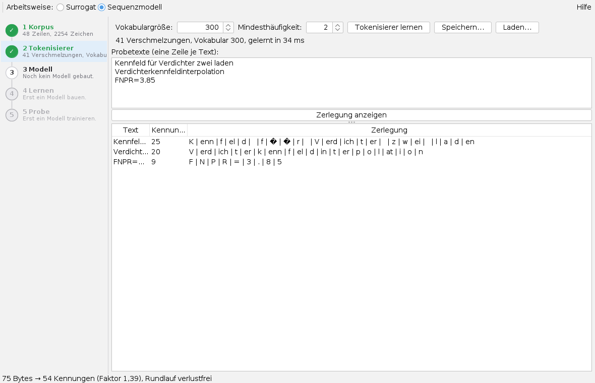
- Korpus: Textdatei laden… liest eine Textdatei, eine Zeile je Beispiel; Zeilen mit
#zählen nicht. Mit Vorlagendatei (Absicht | Muster) erzeugt die App aus Mustern Beispiele je Vorlage. Der Text lässt sich im Feld bearbeiten; Bearbeiteten Text übernehmen übernimmt ihn. - Tokenisierer: Vokabulargröße und Mindesthäufigkeit wählen, Tokenisierer lernen. Zerlegung anzeigen zeigt, wie die Probetexte zerlegt werden; die Statuszeile meldet, ob die Rückwandlung verlustfrei ist. Speichern… und Laden… sichern den Tokenisierer.
- Modell: Schichten, Modellbreite, Köpfe, Feedforward-Breite, Folgenlänge und Bauform (klassisch oder modern) wählen, Modell bauen. Die Modellbreite muss durch die Kopfzahl teilbar sein.
- Lernen: Epochen, Folgen je Schritt und Lernrate, dann Training starten; Abbrechen hält an. Die Kurve zeigt die Kreuzentropie für Training und Bewertung.
- Probe: Das Modell setzt einen Anfang um Länge (Token) fort. Temperatur unter 1 macht den Text vorhersagbarer, über 1 wilder; top-k lässt nur die k besten Token zu; dieselbe Saat gibt denselben Text. Erzeugen schreibt, Anhören liest den Text mit einer Regelstimme vor.
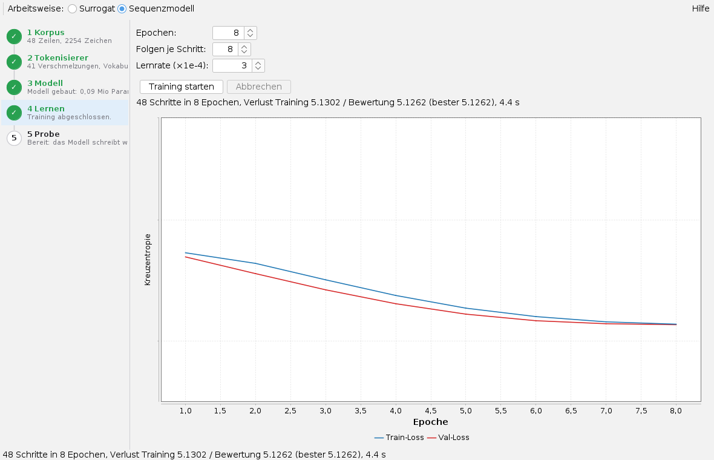
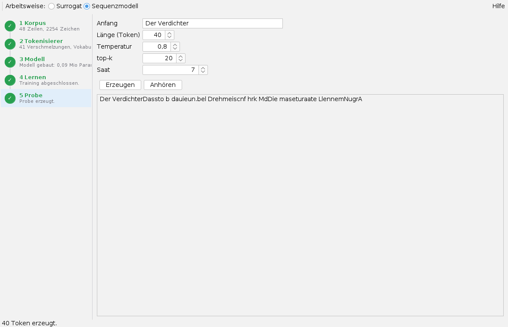
Die Sequenz-Arbeitsweise ist zum Ausprobieren gedacht: Für zusammenhängenden Text braucht ein Modell viel mehr Text und Training, als auf diesen Bildern zu sehen ist. Die Knöpfe Modell speichern… und Modell laden… gelten hier nicht.
Tastatur und Maus
Alt+U öffnet die App. Die Diagramme zoomen mit dem Mausrad. Ein Klick auf einen Spaltenkopf der Suchergebnisse sortiert. Weitere Tastenkürzel hat die App nicht.
Grenzen
- Das Ladefeld errät das Trennzeichen nicht.
- Im Reiter Sensitivität steht Berechnen am Ende der Eingabezeile und liegt in einem schmalen Fenster außerhalb des Sichtbaren; dann das Fenster verbreitern.
- Die Test-Auswertung braucht dieselben Spaltennamen wie beim Training; Spaltennamen mit Komma sind nicht erlaubt.
- Die Sensitivität nach Sobol und die Kontur rechnen das Modell viele tausend Male; bei großen Netzen dauert das.
- Im Sequenzmodus werden Korpus, Tokenisierer und Modell nicht im Arbeitsbereich gesichert; nur der Tokenisierer lässt sich als Datei speichern.
Wann sich ein Ersatzmodell lohnt und was die App kann, steht in der Übersicht; die Rechnung dahinter in neural und autograd.